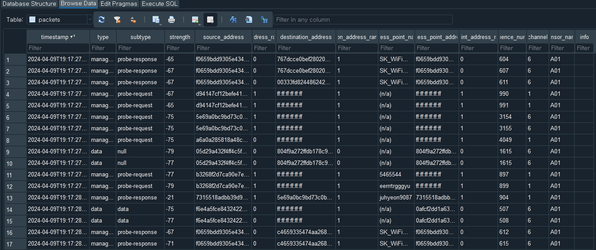

if (!require(pacman)) install.packages("pacman")필요한 패키지를 로딩중입니다: pacmanpacman::p_load(pacman)In this chapter, we will delve into the process of preparing the collected WiFi data for pedestrian behavior analysis. We will start by examining the structure of the SQLite3 database that contains the captured WiFi packets. Then, we will demonstrate how to load the data into R using the RSQLite and DBI packages. Finally, we will explore the loaded WiFi data, understand its attributes, and discuss their significance in the context of pedestrian behavior analysis.
The WiFi data collected using the Urban Sensing system is typically stored in an SQLite3 database. SQLite3 is a lightweight, file-based database engine that provides a convenient way to store and manage structured data. The database file can be easily transferred and accessed across different platforms and programming languages.

To load the WiFi data from the SQLite3 database into R, we will use the RSQLite and DBI packages. These packages provide the necessary functions and interfaces to establish a connection to the database and execute SQL queries.
For a more streamlined and efficient process, we’ll utilize the pacman package, which offers the p_load function. This function automatically installs and loads the necessary packages if they are not already installed.
First, ensure the pacman package is installed and loaded:
if (!require(pacman)) install.packages("pacman")필요한 패키지를 로딩중입니다: pacmanpacman::p_load(pacman)Next, use p_load from pacman to install and load the RSQLite and DBI packages, essential for interfacing with SQLite databases:
pacman::p_load(RSQLite, DBI, data.table, knitr)To establish a connection to the SQLite3 database, we use the dbConnect() function from the DBI package. This function takes the database driver (in this case, SQLite()) and the path to the database file as arguments.
conn <- dbConnect(SQLite(), "path/to/your/database.sqlite")Replace "path/to/your/database.sqlite" with the actual path to your SQLite3 database file.
Download this
To load the WiFi data from the “packets” table, we use thedbGetQuery() function. This function takes the database connection object and an SQL query as arguments. The SQL query specifies the table and columns to retrieve.
wifi_data <- dbGetQuery(conn, "SELECT * FROM packets")| timestamp | type | subtype | strength | source_address | source_address_randomized | destination_address | destination_address_randomized | access_point_name | access_point_address | access_point_address_randomized | sequence_number | channel | sensor_name | info |
|---|---|---|---|---|---|---|---|---|---|---|---|---|---|---|
| 2024-04-09T19:17:27.536121 | management | probe-response | -65 | f0659bdd9305e4341afb9f55df7cd20a4adfd726f83a33c3857281dfa3de8575 | 0 | 767dcce0bef280209ebb9401ddd0694ebd4ca7c7703e3c0269cb86d6592e0012 | 1 | SK_WiFiGIGA8161_2.4G | f0659bdd9305e4341afb9f55df7cd20a4adfd726f83a33c3857281dfa3de8575 | 0 | 604 | 6 | A01 | |
| 2024-04-09T19:17:27.541249 | management | probe-response | -67 | f0659bdd9305e4341afb9f55df7cd20a4adfd726f83a33c3857281dfa3de8575 | 0 | 767dcce0bef280209ebb9401ddd0694ebd4ca7c7703e3c0269cb86d6592e0012 | 1 | SK_WiFiGIGA8161_2.4G | f0659bdd9305e4341afb9f55df7cd20a4adfd726f83a33c3857281dfa3de8575 | 0 | 607 | 6 | A01 | |
| 2024-04-09T19:17:27.635933 | management | probe-response | -67 | f0659bdd9305e4341afb9f55df7cd20a4adfd726f83a33c3857281dfa3de8575 | 0 | 00333fd8244862428d22a482df516ae0315c33a83a9d32e9bf8bc2b0de978467 | 1 | SK_WiFiGIGA8161_2.4G | f0659bdd9305e4341afb9f55df7cd20a4adfd726f83a33c3857281dfa3de8575 | 0 | 611 | 6 | A01 | |
| 2024-04-09T19:17:27.746452 | management | probe-request | -67 | d94147cf12befe41bb40dd7957733c54442de7a9d45a75ec3c747856c4bdc129 | 1 | ff:ff:ff:ff:ff:ff | 1 | (n/a) | ff:ff:ff:ff:ff:ff | 1 | 990 | 1 | A01 | |
| 2024-04-09T19:17:27.765945 | management | probe-request | -65 | d94147cf12befe41bb40dd7957733c54442de7a9d45a75ec3c747856c4bdc129 | 1 | ff:ff:ff:ff:ff:ff | 1 | (n/a) | ff:ff:ff:ff:ff:ff | 1 | 991 | 1 | A01 |
When working with data in R, it’s often necessary to save the data locally for future use or sharing with others. In this section, we’ll explore three common methods for saving the wifi_data dataset on your local machine.
fwrite(wifi_data, "path/to/your/database.csv")Replace "path/to/your/database.csv" with the actual path to your SQLite3 database file.
After loading the data, it is important to close the database connection to free up resources:
dbDisconnect(conn, "path/to/your/database.csv")The WiFi data loaded into R consists of several key attributes that provide valuable information for pedestrian behavior analysis. Let’s explore each of these attributes in more detail:
| Attribute | Description |
|---|---|
| timestamp | The timestamp indicates the exact date and time when the packet was captured by the sensor. It allows for temporal analysis of pedestrian behavior patterns, such as identifying peak hours or days. |
| type | The type column specifies the category of the captured packet. For example, “Management” indicates that the packet is a management frame used for network management and control purposes. |
| subtype | The subtype column provides more specific information about the type of packet. In this example, a subtype of “Probe Request” indicates that the device is actively searching for nearby access points. |
| strength | The signal strength of the received packet is recorded in decibel-milliwatts (dBm). Lower values (e.g., -80 dBm) indicate weaker signals, while higher values (e.g., -30 dBm) indicate stronger signals, suggesting closer proximity to the sensor. |
| source_address | The source address represents the hashed MAC address of the device sending the packet. While the actual MAC address is anonymized for privacy reasons, the hashed value still enables unique identification of devices. |
| source_randomized | This column indicates whether the source address is randomized (1) or not (0). Randomized addresses are used by devices to enhance privacy by frequently changing the MAC address. |
| destination_address | The destination address represents the hashed MAC address of the intended recipient of the packet, which could be an access point or another device. |
| destination_randomized | This column indicates whether the destination address is randomized (1) or not (0), similar to the source_randomized attribute. |
| access_point_name | The access point name, also known as the SSID (Service Set Identifier), is the human-readable name of the access point that the device is trying to discover or connect to. |
| access_point_address | The access point address represents the hashed MAC address of the access point. It uniquely identifies the access point within the network. |
| access_point_randomized | This column indicates whether the access point address is randomized (1) or not (0). Randomized access point addresses are less common but can be used in some scenarios. |
| sequence_number | The sequence number is a unique identifier assigned to each packet within a sequence of packets. It helps in ordering and identifying packets, which can be useful for tracking device behavior over time. |
| channel | The channel attribute indicates the specific WiFi channel on which the packet was transmitted. WiFi channels are numbered from 1 to 14 (with some regional variations) and operate on different frequencies to minimize interference. |
| sensor_name | The sensor name attribute identifies the specific sensor that captured the packet. It allows for spatial analysis and understanding of pedestrian behavior across different sensor locations. |
| info | The info column typically contains the raw WiFi packet data. However, if you have followed the privacy guidelines in this book, the info column would be blanked out to protect sensitive information. |